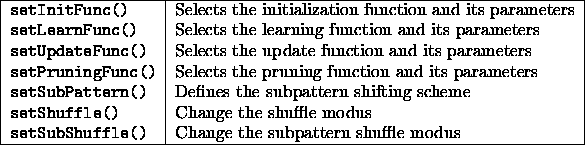
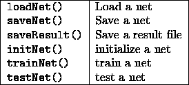

The following function calls relate to patterns:

The simulator kernel is able to store several pattern files (currently 5). The user can switch between those pattern files with the help of the setPattern() call. The function call delPattern deletes a pattern file from the simulator kernel. All three mentioned calls have file_name as an argument:
loadPattern (file_name)
setPattern (file_name)
delPattern (file_name)
All three function calls set the value of the system variable Pat to the number of patterns of the pattern file used last. The handling of the pattern files is similar to the handling of such files in the graphical user interface. The last loaded pattern file is the current one. The function call setPattern (similar to the

button of the graphical user interface of the SNNS.) selects one of the loaded pattern files as the one currently in use. The call delPattern deletes the pattern file currently in use from the kernel. The function calls:loadPattern ("encoder.pat")
loadPattern ("encoder1.pat")
setPattern("encoder.pat")
delPattern("encoder.pat")
produce:
Patternset encoder.pat loaded; 1 patternset(s) in memory
Patternset encoder1.pat loaded; 2 patternset(s) in memory
Patternset is now encoder.pat
Patternset encoder.pat deleted; 1 patternset(s) in memory
Patternset is now encoder1.pat